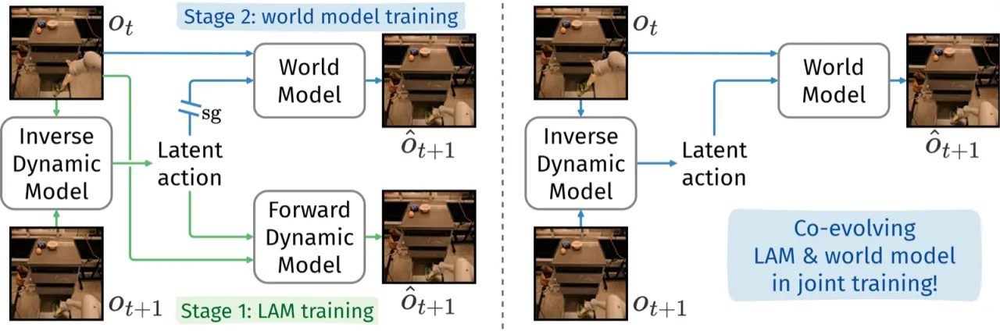
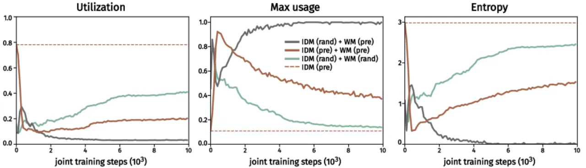
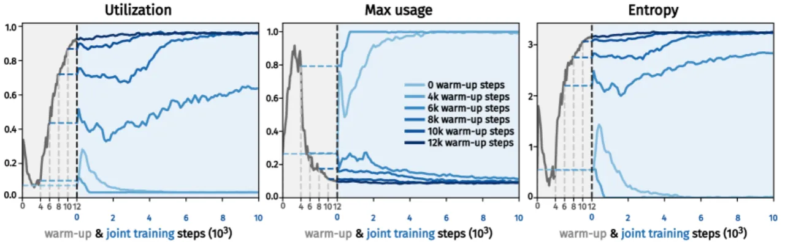
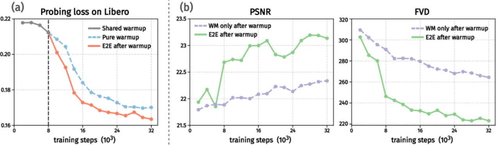
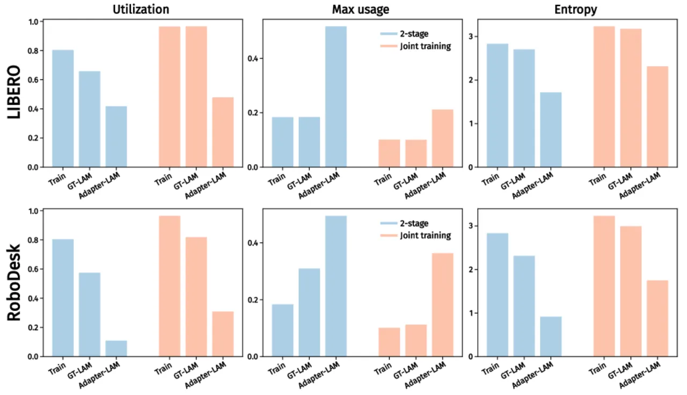
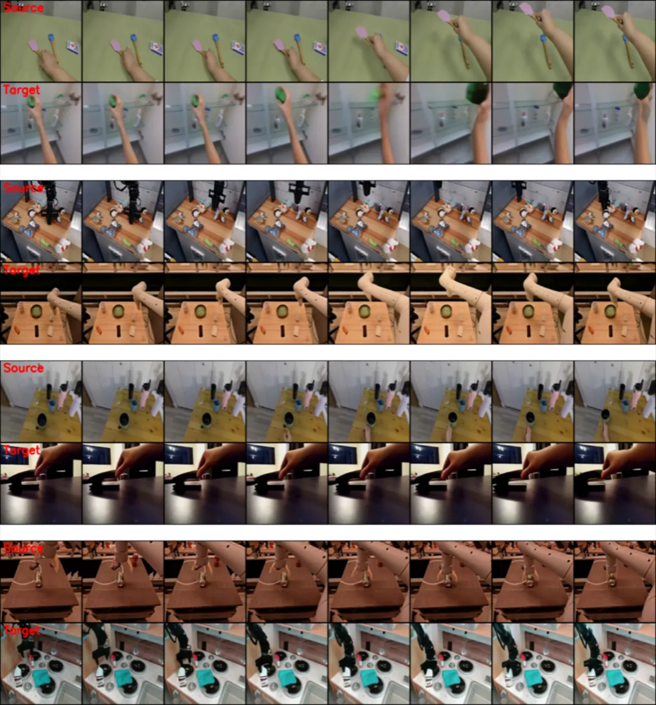

CoLA-World 首次打破"先训 LAM、再训 world model"的两阶段范式，将二者联合端到端训练——通过一个关键的 warm-up 阶段防止 codebook collapse，最终实现两者相互促进的协同进化，在视频预测质量和视觉规划成功率上全面超越两阶段基线。
机器人和视频生成领域普遍采用"latent action model（LAM）+ world model（WM）"的两阶段流水线：先用 inverse dynamics model（IDM）从无标注视频中学习 latent action codebook，再将 codebook 固定，训练以 latent action 为条件的 world model。这种分离训练方式存在根本性冗余——IDM 内部的 forward dynamics model（FDM）与 WM 本质上做的是同一件事（预测下一帧），却各自为政、无法相互促进。
"We argue that there is an inherent redundancy in the design: the FDM and the world model perform almost identical functions, both modeling the transition dynamics of the environment."

CoLA-World 将 IDM 中原有的 FDM 替换为预训练 video generation world model，然后对整个系统端到端联合训练。核心挑战是直接联合训练会导致 latent action codebook 的"表征崩塌"（representational collapse），通过引入 warm-up 阶段可以优雅地解决这一问题。

CoLA-World 的训练分两阶段：


学习到的 latent action codebook 可通过轻量级 adapter 与真实机器人动作对齐，实现从无标注视频到有标注机器人数据的迁移。实验表明，CoLA-World 的 codebook 在适配过程中保持健康的 utilization（>20%），而两阶段基线的 codebook 在适配阶段发生崩塌（utilization 跌至 ~10%，单个 code 占用率激增至 0.5）。
评估涵盖四个机器人/视频数据集（OXE、EgoCentric、AgiBot、LIBERO），以及 VP2 benchmark 上的视觉规划任务（RoboDesk）。主要指标：视频预测用 FVD（越低越好），视觉规划用成功率（越高越好）。对比基线为相同计算预算（60K steps）的两阶段方法。
| 数据集 | 两阶段（LAM30K+WM30K） | CoLA-World（Warm8K+E2E52K） |
|---|---|---|
| OXE | 281.05 | 278.90 |
| EgoCentric | 259.33 | 252.45 |
| AgiBot | 180.45 | 174.93 |
| LIBERO（OOD） | 167.06 | 158.36 |
在所有数据集上，相同计算预算下联合训练均优于两阶段方法，OOD 场景（LIBERO）提升尤为显著。
| 数据集 | 两阶段 | CoLA-World |
|---|---|---|
| LIBERO（real actions） | 115.45 | 93.68 |
| RoboDesk（real actions） | 188.82 | 169.70 |
| 任务 | 两阶段 | CoLA-World |
|---|---|---|
| Upright Block | 22.00 | 35.33 |
| 5-task 平均 | 7.73 | 21.20 |
视觉规划任务上，CoLA-World 的平均成功率为两阶段方法的 2.73×，验证联合训练带来的 codebook 质量优势可直接转化为下游控制性能提升。

计算量更少的配置（Warm8K + E2E30K，共 38K 步）已接近甚至超越 60K 步两阶段基线，表明联合训练收敛更快。此外，更大的 world model backbone（更多 DiT blocks）可持续提升 LAM 的 linear probing loss，验证 world model 能力与 LAM 质量之间的正向关联；增大 batch size（64→128）同样改善两者性能。

CoLA-World 需要以预训练的 video generation world model 为起点，方能在 warm-up 阶段为 LAM 提供有意义的梯度。若预训练模型质量不足或领域差异过大，效果将受限。
联合训练（Warm8K + E2E52K）约需 ~100 小时，而两阶段（LAM30K + WM30K）约需 ~75 小时（Table 8）。尽管收敛更快、性能更优，但绝对计算成本仍然较高，对资源受限的场景形成门槛。
VP2 benchmark 上，CoLA-World 的 5-task 平均成功率为 21.20%，虽远优于两阶段的 7.73%，但绝对数值仍然偏低，距离实际机器人部署所需的可靠性尚有差距。
实验显示 warm-up 步数对 codebook 稳定性有显著影响，需要一定调参成本；在新的数据集或 backbone 上应用时，最优 warm-up 时长可能需要重新搜索。